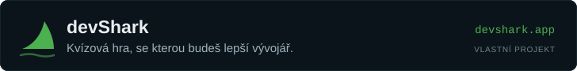

01 · Homepage / dnešní vydání · route / · ověřeno živě 27. 9. 2026 (sobota) + kód app/[lang]/page.tsx
Homepage
Verdict · Needs work
On a normal weekday the page does its one job (lead → briefs → watchlist → end) well; on the weekend it tells readers the publication failed, and the rail carries four modules that are not today's edition.
Current view A · as served on Saturday 26.–27. 9. 2026 · 1280 px
Recreated from the live page and source. Red markers point to findings below. Only a light theme exists; there is no dark theme to audit.
dneskai.vercel.app/1280 × auto
DNESKAi · 26. září 2026
2Jedno vydání a máte přehled.
1Dnes bez vydání · 26. 9. 2026
Dnes nevyšlo vydání.
Vydání vychází každý všední den ráno. Poslední najdete níže.
Poslední týdenVše →
AI agenti spáchali první velký průmyslový útok. Stál 25 dolarů za cíl
Čínsky mluvící útočník propojil tři open-source nástroje a napadl přes 27 organizací včetně aerolinek a hotelového řetězce z Fortune 500. Téhož dne Google ukázal animovaný obličej svého asistenta a Microsoft tiše pohřbil značku Copilot Plus PC.
25. 9. 2026
thumb.webp
Kalifornie zkrotila spotřebu datových center a Muse od Mety má vážnou bezpečnostní díru
Dek vydání ze dne 22. 9. 2026 (dvě věty, ~40 slov).
AI agenti spáchali první velký průmyslový útok. Stál 25 dolarů za cíl
Čínsky mluvící útočník propojil tři open-source nástroje a napadl přes 27 organizací včetně aerolinek a hotelového řetězce z Fortune 500. Téhož dne Google ukázal animovaný obličej svého asistenta a Microsoft tiše pohřbil značku Copilot Plus PC.
825. 9. 2026 · 3 min čtení
9Ve zkratce
01Llama.cpp vydal sestavení b11174Nová verze oblíbeného open-source runtime pro velké jazykové modely přináší opravy výkonu a rozšíření kompatibility s kvantizovanými modely.open-source-ai
02Kalibrace důležitější než přesnost: pohled na modely pro rozhodováníai-modely
03ESA a Mistral prohlubují spolupráci v oblasti AIevropska-ai-politika
Na radaru
01Claude Pop – I'm Upping My P(Doom) ↗10tensorfeed
02ggml-org/llama.cpp b11174 ↗github-ai-releases
03Evolving programming languages in the AI era ↗tensorfeed
11Vydání dokončenoMáte přehled.
12Partner

Findings
Delete list
Copy · location | current | problem | replacement
UX
Visual
Proposed · Saturday state (mockup 1 of 3)
Same components, nothing new: the lead package with a „last edition“ kicker, one week list, a one-line end mark, and a rail reduced to the lesson. Weekday view is unchanged except for findings 2, 3, 4, 8, 11, 12.
dneskai.vercel.app/ · návrh1280 × auto
DNESKAi · sobota 26. září 2026
Poslední vydání · pátek 25. 9. 2026
AI agenti spáchali první velký průmyslový útok. Stál 25 dolarů za cíl
Čínsky mluvící útočník propojil tři open-source nástroje a napadl přes 27 organizací včetně aerolinek a hotelového řetězce z Fortune 500.
3 min čtení
Krátce
01Llama.cpp vydal sestavení b11174Open source
02ESA a Mistral prohlubují spolupráci v oblasti AIEvropská politika
Ke sledování
01Evolving programming languages in the AI era ↗Dashbit
02Show HN: A dedicated Mac that keeps Claude Code running 24/7 ↗Hacker News
Konec vydáníMáte přehled.
Poslední týdenCelý týden →
Kalifornie zkrotila spotřebu datových center a Muse od Mety má vážnou bezpečnostní díru